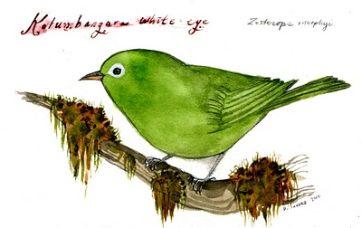

Sunday, May the 8th, 2011
back to: title, date or indexes
Mr Key is taking a brief break from Hooting Yard duties to attend to a number of matters in the mundane world. Rather than wailing and gnashing your teeth and rending your garments in the extremity of despair, you should pop round to Diana Sudyka's Tiny Aviary. I am most grateful to reader Richard Carter for telling me about it. Don't miss the plaster monster loon!
